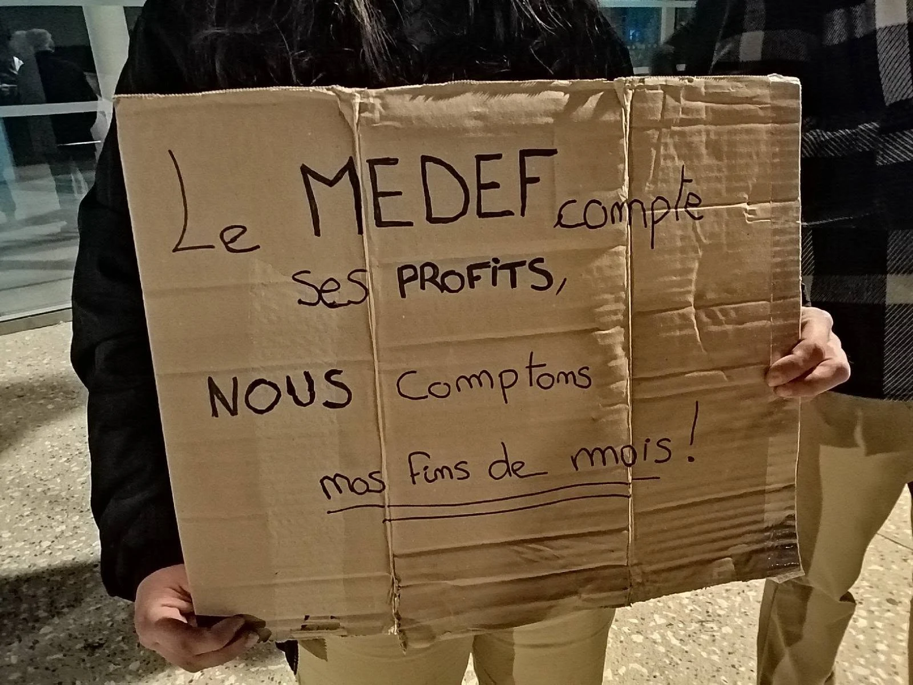
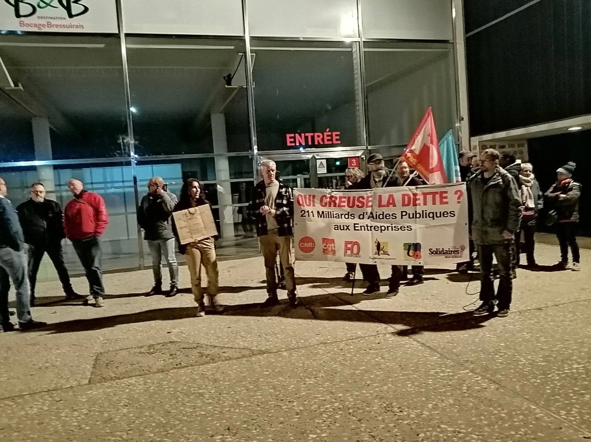

Publication du PCF 79
« Merci patron !! » Comité d’accueil à Bressuire
Date indiquée par Facebook · 28 octobre 2026
Légende originale du PCF 79
Comité d'accueil pour le patron du MEDEF
MERCI PATRON !!
C’est un événement en Bocage Bressuirais : le Président du MEDEF, Patrick Martin, etait l’invité de cette soirée à Bocapole à Bressuire, où Il partagera sa vision des entreprises françaises et des défis pour l’économie. De quelle vision s’agit-il ? Patrick Martin naît dans une famille d'industriels fortunés, propriétaires de l'entreprise Martin-Belaysoud, dont il hérite. Sa fortune professionnelle est estimée en 2022 à 300 millions d'euros, ce qui le situe selon Challenges à la 389e place des plus grandes fortunes françaises. En 2023, Il exprime son opposition à un endettement public accru et la taxation exceptionnelle du patrimoine financier des plus riches pour financer les investissements nécessaires à la lutte contre le changement climatique. Après les élections législatives de 2024, il appelle à constituer un « front économique » face à la coalition de gauche du NFP, dont il dénonce le projet d'abolition de la réforme des retraites, de rétablissement de l'impôt sur la fortune et de hausse du salaire minimum. Il appelle à poursuivre la politique « pro-business » menée par Emmanuel Macron. Reçu à Matignon. Il ne ferme pas la porte à une hausse temporaire des impôts des entreprises, mais exige que l'Etat fasse des économies. Il critique fortement les hausses de SMIC, arguant qu'elles conduisent à une perte de compétitivité et donc à des destructions d’emplois. Pour améliorer la compétitivité, il propose de baisser les charges patronales. Il propose également de favoriser l'investissement en basculant le régime de retraite vers des fonds de pension qui dirigeraient l'épargne vers les entreprises. Il s'inquiète de toute hausse des taxes supportées par les entreprises. Selon lui, les réformes de l'assurance chômage n'ont pas été assez profondes également, et il faut veiller à baisser les charges sociales payées par les entreprises. En 2025, il s'oppose à toute augmentation de la fiscalité pour les entreprises, et, par ailleurs, s'oppose également à la taxe Zucman, estimant qu'une charge fiscale supplémentaire pour les plus grandes fortunes défavoriserait l'investissement. Le 2 février 2026, il propose un nouveau CDI pour les jeunes, plus souple et qui pourrait être rompu sans motif pendant les trois premières années. Il se croit autorisé à déterrer un funeste projet qu’une fronde historique avait pourtant enseveli en 2006 : le « contrat première embauche ». En août, il défend l’idée d’une TVA sociale : Les entreprises paieraient moins de cotisations, tandis que les recettes nécessaires au financement de la protection sociale seraient davantage prélevées sur les ménages, à la place des entreprises, via une hausse de la TVA. Le 22 septembre le Medef suggère un non-remboursement des arrêts maladie de courte durée. Le 7 octobre il annonce qu'il pourrait "fuir" en cas d'arrivée de Jean-Luc Mélenchon.
N'EN JETEZ PLUS !
Le MEDEF a déclaré près de 3 millions d’euros de lobbying en 2024, un montant qui a triplé en 4 ans. C’est l’organisation la plus active dans l’influence des décisions politiques. Il semble s’inquiéter de la gauchisation des idées, économiques notamment. On avait pourtant l’impression que la parole patronale (et ses innombrables réseaux, médias, instituts, colloques…) infusait dans toute la société. Il faut croire que ça ne leur suffit pas ; et que ça résiste dur, en bas, aux dogmes libéraux. C’est plutôt une bonne nouvelle. Parmi les plus importantes revendications des manifestants ce mois-ci, la hausse des salaires est sur toutes les lèvres. Le Medef a même dû se positionner en faveur d’une augmentation générale de la rémunération ! Mais en prenant les cotisations nécessaires tout au long de la vie, pour augmenter artificiellement le salaire net. Au passage, on torpille notre modèle social et les entreprises ne déboursent pas un euro. Elle n’est pas belle la vie selon les patrons ? L’emploi a été et reste l’obsession du capitalisme qui mène une guerre sans relâche contre les règles, les normes et les garanties collectives des salariés. Ce système exige d’avoir les mains libres pour licencier, imposer la flexibilité et la précarité afin de garantir une rentabilité maximale aux actionnaires. En France, comme ailleurs, la jeunesse est devenue le laboratoire de l’affrontement capital/travail. Sophie Binet dénonce "la cupidité des grands patrons" : Ce qu'oublie de rappeler le patron du Medef, c'est que la France est vice-championne du monde de distribution des dividendes". Elle "appelle les grands patrons à cesser avec leur attitude cupide qui nous enferme dans la récession". "Si nos entreprises ont autant de difficultés économiques aujourd'hui, c’est que la consommation chute, les salariés n'ont plus les moyens de se nourrir, d'avoir des loisirs, de partir en vacances." C'est pourquoi la CGT réclame aussi "le blocage des prix de première nécessité, notamment le carburant et un certain nombre de produits alimentaires".
Le 5 novembre, soyons en grève et en manifestation toutes et tous pour le partage des richesses créées par le travail, pour lutter contre la vie chère et assurer un meilleur avenir à la jeunesse !
Repères éditoriaux
À l’occasion de la venue du président du MEDEF à Bocapole, notre publication a pris position sur les salaires, les retraites et les prix. Elle se termine par un appel à la grève et aux manifestations du 5 novembre.


Sources
PCF 79 · relevé Meta et fil Facebook · FB-1451897807123468
À lire aussi · Manifestation du 5 novembre à Bressuire